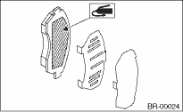

1. Install the support to the housing.
Tightening torque:
80 N·m (8.2 kgf-m, 59 ft-lb)
2. Apply a thin coat of Molykote M7439 to the pad clip.

3. Apply a thin coat of Molykote AS880N (Part No. K0777YA010) to the frictional portion between inner pad and the rubber coat shim. (Australian model)
NOTE:
• Do not apply grease between the outer pad and the outer shim. (Australian model)
• Do not install the inner shim and outer shim incorrectly. (Australian model)

4. Install the pad to support.
5. Install the caliper body to the support.
Tightening torque:
26.5 N·m (2.7 kgf-m, 19.5 ft-lb)
6. Connect the brake hose using the new gaskets.
Tightening torque:
18 N·m (1.8 kgf-m, 13.0 ft-lb)
CAUTION:
When connecting the brake hose, do not twist it.
7. Bleed air from the brake system.